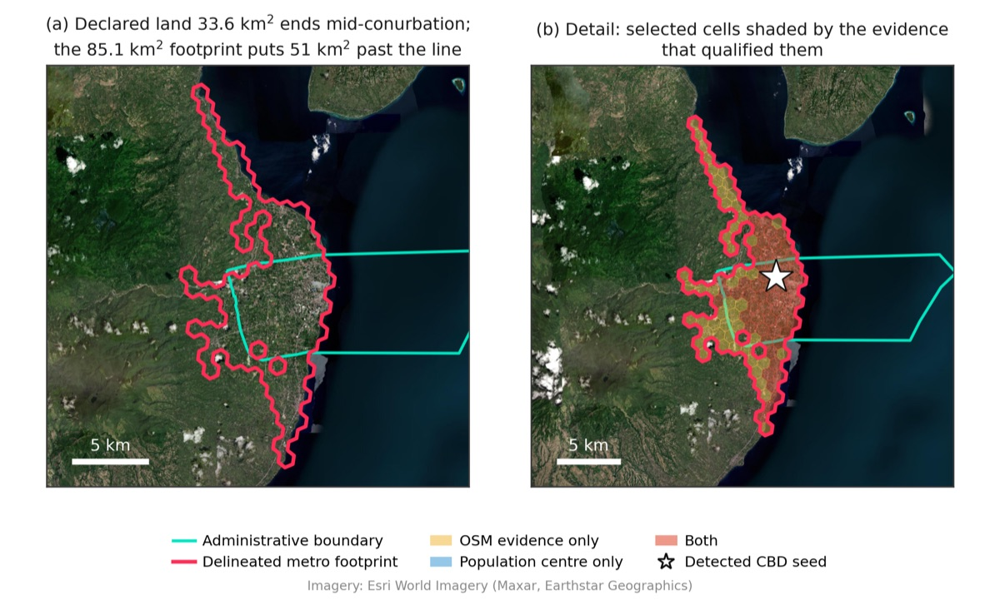
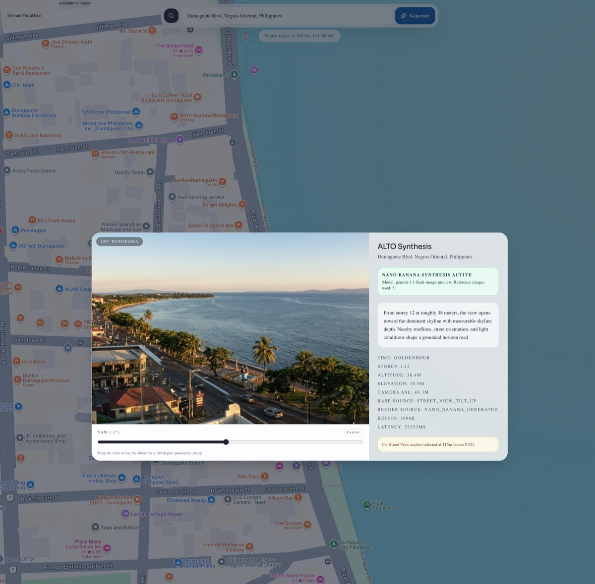
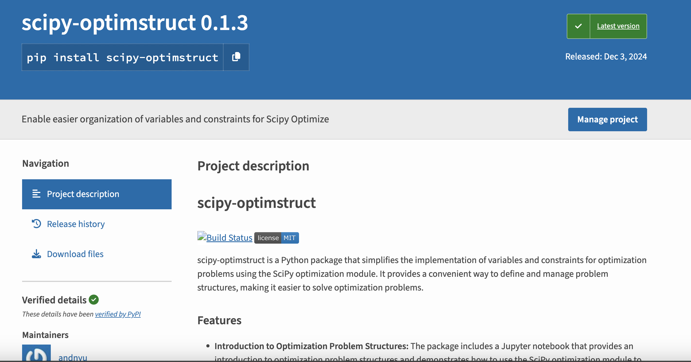
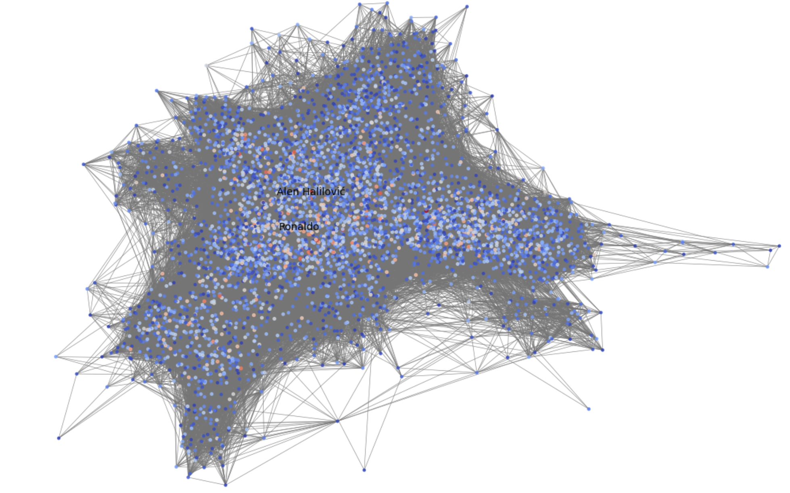
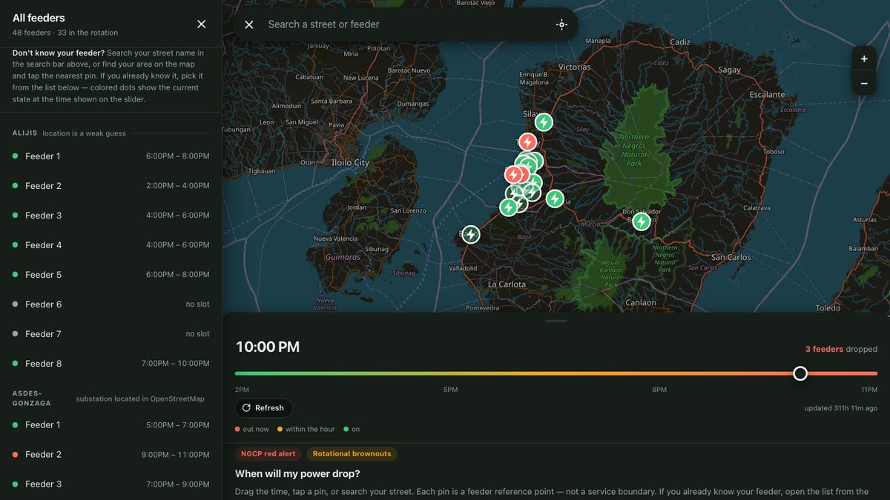
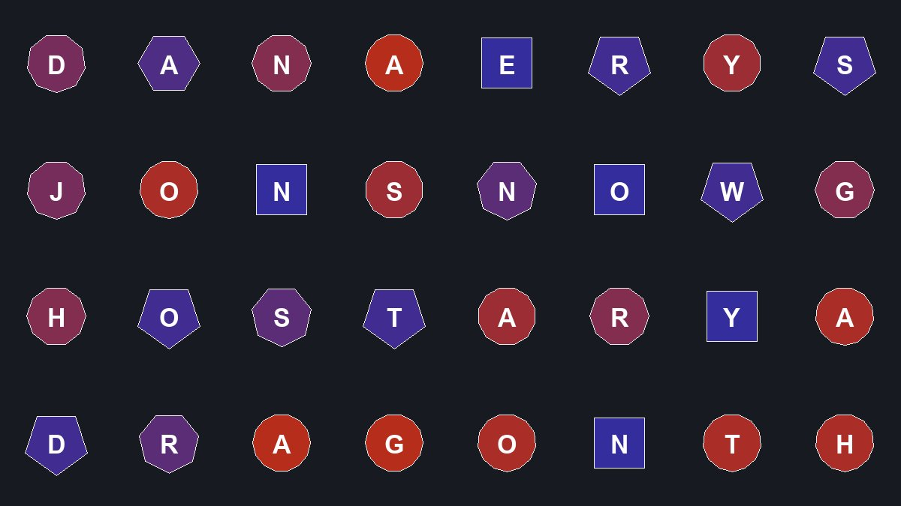
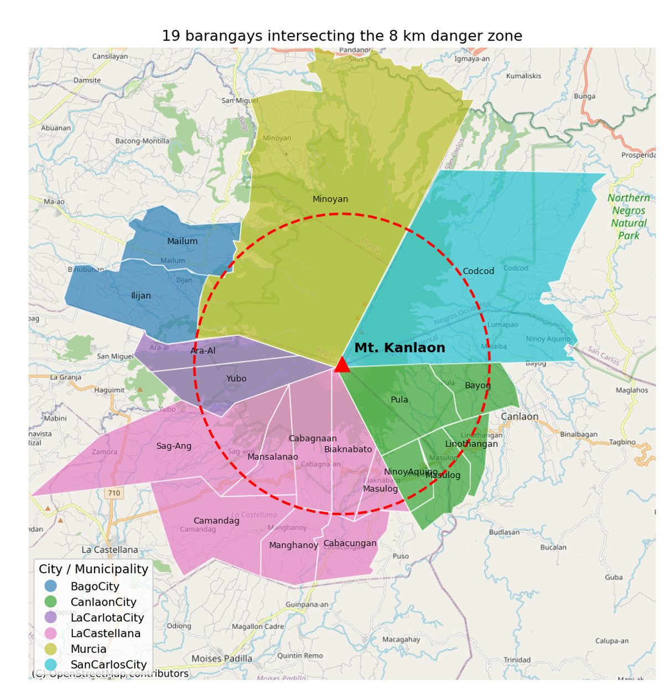

About Me
I grew up in the Philippines, where I saw firsthand how technology can bridge gaps and transform lives. That inspired my path as a data scientist and developer, building models and tools on geospatial, demographic, and shopper data. I have lived in Manila and Singapore and worked across different fields, from data science and software engineering to product strategy for Southeast Asia and Australia.
I'm now interested in research and open-source work at the intersection of ML, geospatial data, and LLMs. I am privileged to have had a diverse set of experiences, having lived, worked, and played football in five (and hopefully counting) cities.
Projects
Data science & geospatial
-

Metro-Mapping
Open-data pipeline that delineates the functional metro area of any Philippine city on an H3 hex grid. Combines OpenStreetMap establishments and roads, WorldPop population, and a CBD-connectivity rule to produce a reproducible built-up footprint, calibrated against GHSL and validated on held-out cities. Ships as a static web map.
-

ALTO
Skyline view synthesis for real estate and urban planning, built for the SG DeepMind Hackathon. Pick an address, storey, heading, and time of day; ALTO stacks Street View, satellite, and elevation context, derives a deterministic lighting profile, and prompts Gemini to render what the view would look like before it exists.
-
Where PH
Web app that uses a geospatial join to map a set of coordinates to detailed location information (village, city, province). Includes an authentication and credits module enabling batch upload for registered users. Saved 100+ labor hours across multiple area mapping projects.
-

-

Six Degrees of FIFA Separation
Analyzed a network of 41k+ players and millions of connections across FIFA 15–21 with union-find and BFS, validating the small-world phenomenon in professional football and discovering Allan Nyom as the most connected player. Now playable as The Pass: connect any two players through their shared teammates.
Software
-

-
Ilonggle
Wordle clone in the Ilonggo language that reached 2,000 users across 20 countries. Built a web scraper to assemble an Ilonggo dictionary from trusted sources and hand-picked the final word list.
-

NGon Word Game
Word game from a college class where every letter tile is a regular n-gon, n ∈ [4, 16], and n is also the tile's score. Each polygon is constructed from a target area: side length s = √(2·A·tan(π/n)/n), apothem a = s / (2·tan(π/n)), then vertices are walked from the top by turning 2π/n per edge. The apothem doubles as the hit-test radius for clicks, and tile color is a red–blue gradient in n.
Talks
-

Geospatial Data and its Applications for AI
A practical lecture for the Philippine IOAI team on how to think about location as a feature: vector vs raster data, coordinate reference systems, spatial joins, and raster sampling, with a hands-on notebook localized to Negros Island weather and elevation data. Ends with where the field is heading: geospatial embeddings and self-study paths.
Contact
If you'd like to get in touch, feel free to reach out via the links below.